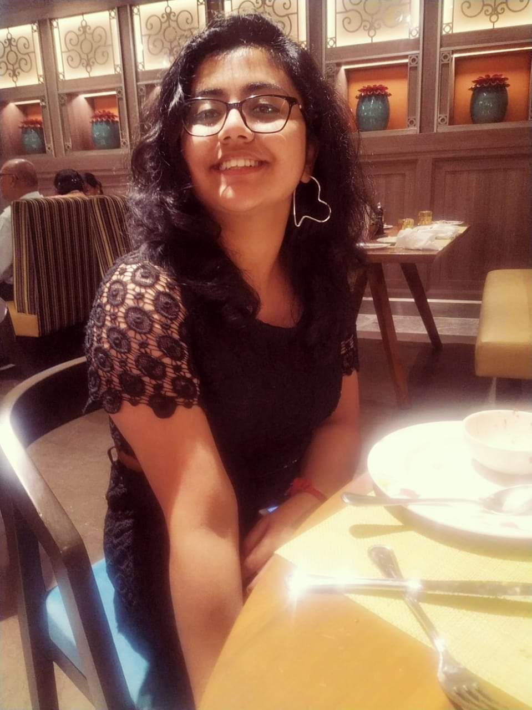

Shreya Biswas
About me:

I am a final year student at Jadavpur University. I am currently persuing bachelor's in enginnering from Electronics and Telecommunication branch. I am 21 years old and I am very passionated about Computer Vision. From an early age I was interested in how a computer visualises the real world around it. Hence, in my first year of college, I started reading about interpretability and understanding in computer models and especially how they try to mimic the human brain. Thus began my journey with Computer Vision.
Soon I started working in this domain under the guidance of my college professors. I have been extremely fortunate to have the chance of working with some of the best minds and hence have been affilitated to some of the best instituions in this field. The following are some of the intitutions with whom I have had the chance to work -


- The following areas are my research interests -
- Computer Vision
- Image Processing - Classification and Segmentation
- Object Detection
- Deep Learning
- Natural Language Processing
| Technical skills | Java [5/5] Python [5/5] C [4/5] C++ [4/5] Tensorflow [5/5] OpenCV [5/5] Pytorch [3/5] HTML [4/5] CSS [3/5] Javascript [3/5] |
|---|---|
| Language |
Fluent: English, Hindi, Bengali Conversational ability: German |
| Interests | Literature, Painting, Photography. Do take a look at my Literaty website |
Work Experiences:
- SUMMER RESEARCH INTERNSHIP (2022) - Dragonfly Algorithm based Multi-Threshold Segmentation
MACHINE INTELLIGENCE RESEARCH (MIR) LABS - Under Prof. Ajith Abraham
• The project concerns a Dragonfly Algorithm based Multi-Threshold Segmentation of Eye Retina Images. The objective function uses Kapur's entropy to find the multiple thresholds. - SUMMER RESEARCH INTERNSHIP (2021) - Detection of Cyclone Eye using Deep Learning methods
INDIAN STATISTICAL INSTITUTE - Under Prof. Sankar K. Pal
• The project concerned the detection and localisation of Cyclone Eyes using Deep Learning methods. I studied Image Processing and Object Detection methods for the same. My main focus was to use RCNN, Faster RCNN and Mask-RCNN models on the NASA dataset and try to improve our model performances. We achieved satisfactory results in detecting the eye of the cyclone accurately. - WINTER RESEARCH INTERNSHIP (2020) - Image Retrieval using Deep Hashing Methods
INDIAN INSTITUTE OF TECHNOLOGY KHARAGPUR - Under Prof. Sudipta Mukhopadhyay
• The project concerned the study of Deep Hashing Methods for Image Retrieval. I introduced a hash layer as the last layer of the CNN model, which helped segregate the images on the base of their similarities into 'n' groups, where 'n' was the hash layer parameter.
Publications
- JOURNALS
• Kurmi, A.; Biswas, S.; Sen, S.; Sinitca, A.; Kaplun, D.; Sarkar, R. An Ensemble of CNN Models for Parkinson's Disease Detection Using DaTscan Images. Diagnostics 2022. [The paper can be found here]
• Somnath Chatterjee, Shreya Biswas, Arindam Majee, Shibaprasad Sen, Diego Oliva, Ram Sarkar. Breast cancer detection from thermal images using a Grunwald-Letnikov-aided Dragonfly algorithm-based deep feature selection method, Computers in Biology and Medicine, 2021.
• Biswas, S.; Chatterjee, S.; Majee, A.; Sen, S.; Schwenker, F.; Sarkar, R. “Prediction of COVID-19 from Chest CT Images Using an Ensemble of Deep Learning Models”. Appl. Sci. 2021, 11, 7004.
- CONFERENCES
• Bodepu Sai Tirumala Naidu, Shreya Biswas, Rounak Chatterjee, Sayak Mandal, Srijan Pratihar, Ayan Chatterjee, Arnab Raha, Amitava Mukherjee, Janet Paluh. SCENIC: An Area and Energy-Efficient CNN-based Hardware Accelerator for Discernable Classification of Brain Pathologies using MRI, VLSID 2022 Conference.
- BOOK CHAPTERS
• Majee A.; Biswas, S.; Chatterjee, S.; Sen, S.; Mirjalili, S; Sarkar, R. “Moth-flame Optimization based Deep Feature Selection for Cardiovascular disease Detection using ECG Signal”. A Handbook on Moth-Flame Optimization, edited by Seyedali Mirjalili.
Competitions and Personal Projects:
- Mathematical model of Creativity (2022) - Dragonfly Algorithm based Multi-Threshold Segmentation
Undergraduate Final Year Project - Under Dr. Amit Konar
• Currently trying to create a generic system to mathematically model creativity. Our aim is to make the system automatically generate new theorems and prove them based on already known classical theorems. - Lexical Normalization Modeling in the WNUT 2021 challenge - MultiLexNorm (2021) • The MultiLexNorm Challenge deals with Multilingual Lexical Normalization. I have tried to implement four Sequence models - with LSTM, Bidirectional LSTM, Attention Models in the Decoder, and Transformer, respectively. I have used Character level embedding for the modeling. The code for this project can be found here in my Github repository link.
- Amazon ML Challenge (2021) - Image Retrieval using Deep Hashing Methods • The Amazon 2021 ML Challenge was a two-stage competition where we had to work on Amazon's real-life dataset to build innovative Machine Learning solutions for a real-world problem statement. I tried to implement data cleaning techniques and word embeddings to form the feature set, before running a Deep Learning model to predict the solutions. The code for this project can be found here in my Github repository link.
What's New!
- I gave a presentation on Image Segmnetation and its various methods. Here is the slide for the same.
- I recently hosted the biggest Machine Learning Event in Jadavpur University - IEEE ML Accelerator Summit 2.0. I taught the students basic Machine Learning models and explained them the tgheory behind Support Vector Mahcines.
- Recent Paper published in Diagnostics, MDPI on Automatic CNN based Parkinson's Disease Detection.
- Ranked 3 out of 75 scholars in West Bengal in the Jagadish Bose National Science Talent Search Examination
Education:
Jadavpur University |
(2019-Present) |
|---|---|
|
Delhi Public School Megacity, Kolkata |
(2005-2018) |
|---|---|
|